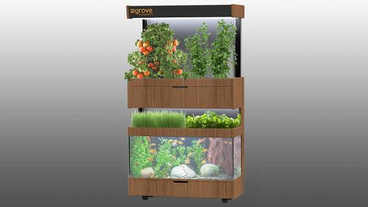

| Fotoğraf | Adı | Açıklaması | İlgili link |
|
Gantt Şeması | Biyosfer XYZ grubunun BİLKENT Üniversitesi'nde 2019-2020 bahar yarıyılında yaptıklarıdır. | LINK |
|  | Grove Ecosystem | Projemizin prototipini yaparken örnek aldığımız sera- akvaryumu olan bir düzenek. | LINK |
|
Akıllı evlerde iletişim | Akıllı evlerde nesnelerin iletişimini gösteren bir şema. | LINK |